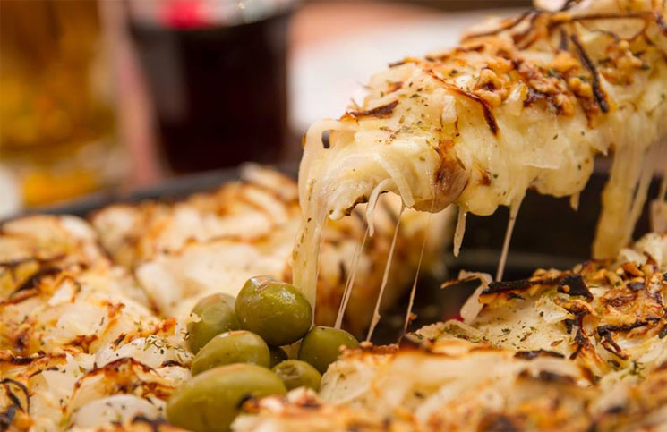
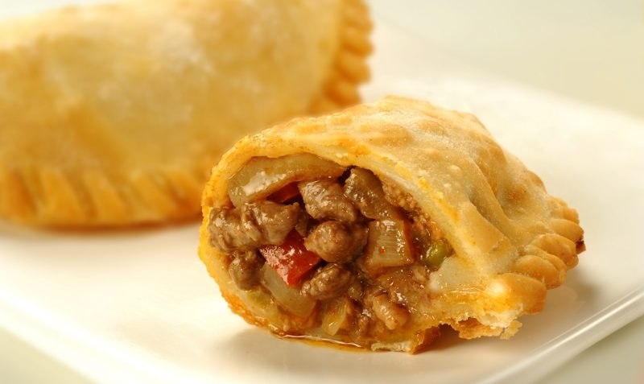
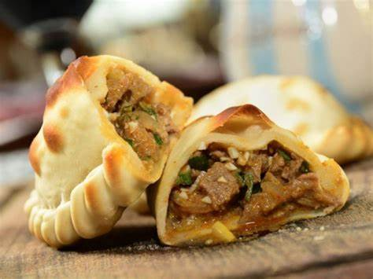
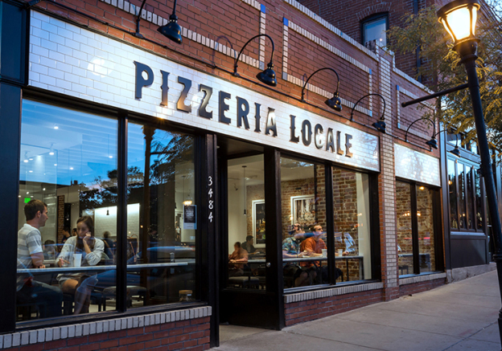
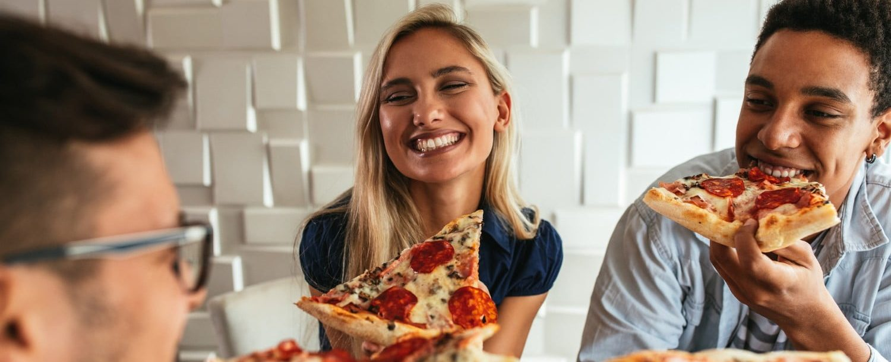

⭐LO MEJOR DE NOSOTROS⭐
🍕Pizza fugazzeta🧅
Pizza con mucha muzza y ABUNDANTE cebolla!
🥟Empanadas de carne picante🌶️
Carne cortada a cuchillo, super jugosas y MUY picantes!!
 LA PIZZERIA
Fundada en 1986
Nuestra Historia
Fundada en 1986 por italianos, convirtiendo a la pizza argentina, en una de las más reconocidas en el mundo entero. Ha pasado el tiempo, pero seguimos respetando el método de elaboración, los ingredientes y la materia prima para continuar siendo la pizzería más tradicional del pais
Conoce las mejores maneras de disfrutar de la Pizzeria
Nuestras Pizzas congeladas son el sabor de todas tus reuniones
LA PIZZERIA te deleita con su nueva línea perfecta para solucionar todas tus comidas de una manera super fácil y rápida. Podés elegir Fugazzetta, Muzzarella y Jamón. ¡Listas, prácticas y riquísimas!